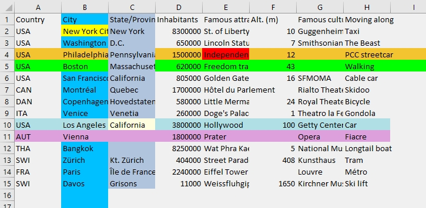
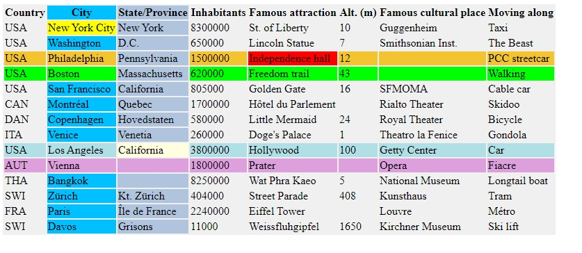
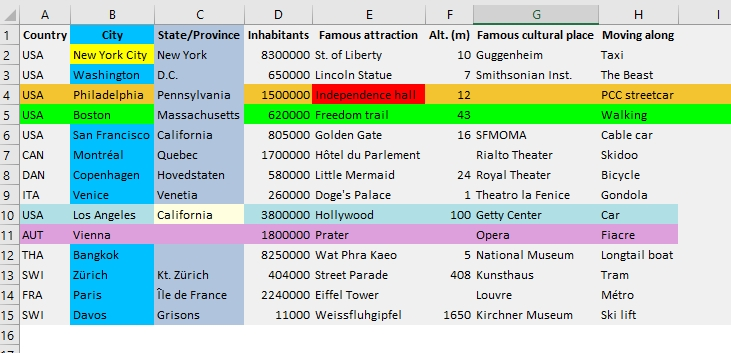

Introduction
The fnctions table style table(), table style rows() and table style columns() a parameter called Coverage which can take following values:
| Coverage | Explanation |
|---|---|
| sheet | Covers entire sheet. In Excel the entire sheet and not just the table saved applies. Following precedence rules apply: Columns, rows and cells overpaint tables Rows and cells overpaint columns Cells overpaint rows. |
| table | Covers entire table, but not outside the table. Same precedence level as formatting cells. The last function call applies the last paint on the top. |
| body | Covers table body except header row. Same precedence lvel as formating cells. The last function call applies the last paint on the top. |
Precedence example with the 'Cities' table
echo("Demonstrate precedences in formatting sheets / rows / columns / cells");
table load( t, "Examples\Cities.csv" );
table style cells( t, City, 1, single, fill color, yellow );
table style cells( t, Famous attraction, 3, single, fill color, red );
table style rows( t, 4, sheet, fill color, green );
table style columns( t, City, sheet, fill color, aquamarine);
table style rows( t, 3, sheet, fill color, saffron );
table style rows( t, 9, table, fill color, powder blue );
table style columns( t, "State/Province", table, fill color, steel blue);
table style rows( t, 10, table, fill color, plum );
table style cells( t, "State/Province", 9, single, fill color, {255,255,128} );
table style table( t, sheet, fill color, gray 15 );
// Calling the same function with 'table' instead of 'sheet' would overpaint every cell
table save( t, "Images/Style_Precedences.html", HTML );
table save( t, "Images/Style_Precedences.xls", EXCEL );
table save excel file( t, Contents, "Images/Style_Precedences.xlsx" );Demonstrate precedences in formatting sheets / rows / columns / cells
Saved table(s) to EXCEL file 'Images/Style_Precedences.xlsx' containing 1 sheets.
Test Click on the file name view the result: Style_Precedences.html.
Test Click on the file name open the file with Excel XML 2003: Style_Precedences.xls (Excel XML 2003 format - confirm the message box query).
Test Click on the file name open the file with Excel (.xlsx) : Style_Precedences.xlsx (Excel .xlsx format).
The Excel file looks like this one (Formatting rows and colums beyond the table):

The HTML file loaded in Excel looks as follows (Formatting inside table only):

The HTML file loaded in Excel looks as follows (Formatting horizontally beyond the table but not vertically):
